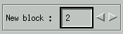
Next, the simulation popup menu is displayed. Keep this popup menu present during the whole simulation, otherwise parameters will get lost. If a previous run has been saved, parameters and settings can be restored from disk with Read Parameters. The program can display the combined result of 12 independent spin systems. Each spin system can contain up to 10 spin groups. A spin group contains one or more equivalent nuclei. Spin system can only be manipulated one at a time.
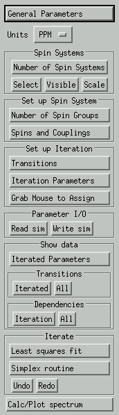
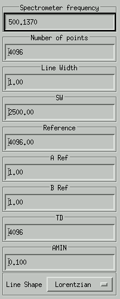
In many case, only one spin system will be simulated (the default). If more spin systems are required, set the total number here.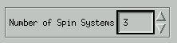
Select the active spin system. That is the spin system that can be manipulated.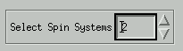
Select which spin systems are visible.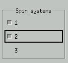
Set a scalings factor for each spin system. Normally, these factors are all 1.000. For a simulation of a mixture, different scaling factors can be applied. For example: if the spectrum of a reducing monosaccharide is simulated. The simullation of the alpha component is loaded in spin system 1, and the beta component in spin system 2. The scaling factors for 1 and 2 can be set to the apha/beta ratio.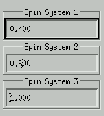
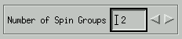
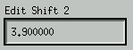
Use Set Number of Spins for Shift to set the number of spins in a spin group, for example 3 for CH3. Use Set Isotope Number for Spin(s) to set the isotope identifier. For example, use 1 for protons and 2 for Carbon. The value of the isotope identifiers do not matter as long as different isotopes have unique identifiers.
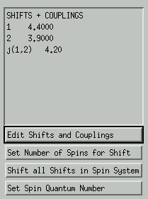
Finally press the Plot button to calculate and display the spectrum.
Remember to use Plot whenever a change to the simulated spectrum
has taken place and the spectrum should be refreshed.
Select a peak in the simulated spectrum and press the left mouse button. A popup window shows the selected transition(s) and the corresponding frequency. This frequency can be changed to a value that corresponds with a peak in the recorded spectrum. Check the frequencies that should be updated. Repeat this for all transitions that should be shifted to a different position.
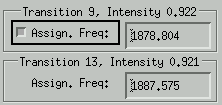
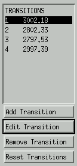
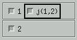
# SIMULATION PARAMETERS
=======================
# Number of spin groups
NG 3
# Spectrometer frequency
SF 500.137
# Number of data points
SI 16384
# Sweep Width
SW 4000.0
# Reference channel
REF 14536
# Line width
LW 0.700
# Chemical shifts
PPM
D 1 4.76
D 2 3.93
D 3 3.76
# Chemical shift: equivalent
nuclei per spin group
S 1 1
S 2 1
S 3 1
# Chemical shift: isotope
identifier
I 1 1
I 2 1
I 3 1
# Coupling constants
J 1 2
1.80
J 2 3
3.50
# Assigned Transitions
# Iteration Parameters
# LSQ stuff
===========================
# Number of iterations
NI 2
# Genetic algorithm stuff
===========================
# Number of function calls
NFC 1000
# Number of populations
NP 1
# Population size
POP 50
# Boundaries for step
sizes (percentage)
STEP 5.0 %
# No of children per
parent to select from
CHILD 6
# Neighborhood radius
to select from
RADIUS 5
Iterated parameters:
Isotope Chemical shifts Correction Errors
1 w(1) 4.760 ppm not iterated
1 w(2) 3.917 ppm -0.013 ppm 0.001 ppm
1 w(3) 3.777 ppm 0.017 ppm 0.001 ppm
Coupling constants Correction Errors
j(1,2) 1.800 hz not iterated
j(1,3) 0.000 hz not iterated
j(2,3) 3.500 hz not iterated
Fitted spectrum
line trans. frequency error int. origin
no. calc. exp.
5 14 1950.000 1952.000 2.000 0.95 e( 6) - e( 8)
7 12 1943.346 1943.346 0.000 0.91 e( 4) - e( 7)
Dependence of the transition frequency on nmr parameters
(* denotes transitions assigned for the iterative computation)
trans. int. frequency parameters
no. calc.
j(1,2) w(2)
j(2,3)
=======================================================
15 0.98 2384.009 -0.51 0.00
7 0.98 2384.000 -0.51 0.00
11 1.02 2377.354 0.49 -0.00
1 1.02 2377.346 0.49 0.00
14 0.95 1950.000 * -0.49 0.47
4 1.08 1945.579 -0.49 1.47
12 0.91 1943.346 * 0.51 0.46
2 1.06 1938.925 0.51 1.46
13 1.07 1882.653 -0.00 -0.47
9 1.07 1882.645 0.00 -0.46
5 0.93 1878.232 -0.00 0.53
3 0.93 1878.224 0.00 0.54
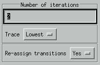
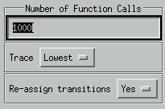
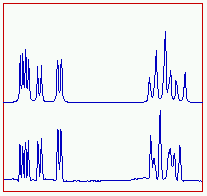